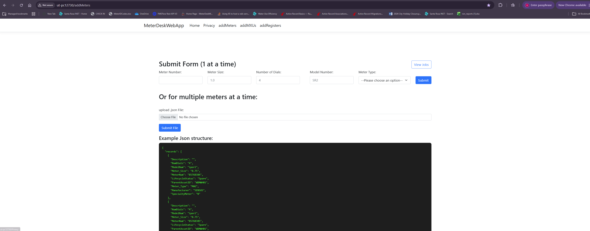
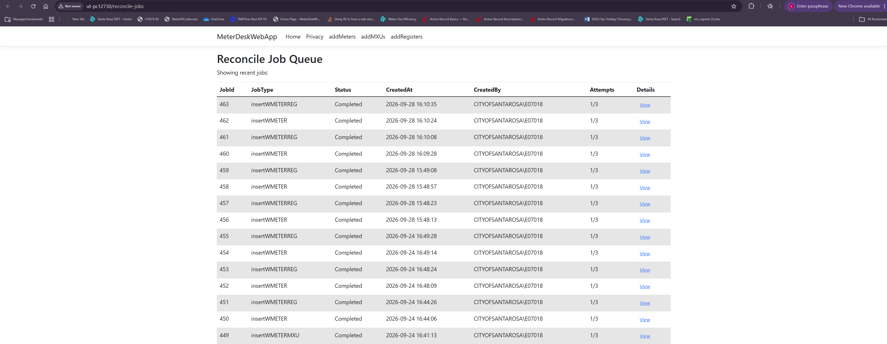

City of Santa Rosa · Public Works & Utilities
Santa Rosa's Asset Management Team is building the digital infrastructure that keeps our city's water and utilities running smarter — integrating modern platforms, automating critical workflows, and delivering real results for every neighbor we serve.
Landmark Achievement
The integration that changed how Santa Rosa manages water — end-to-end, fully automated.
The Asset Management Team engineered and deployed a seamless, end-to-end integration between Santa Rosa's CIS Water Billing platform and Cityworks — unlocking real-time meter data synchronization and eliminating manual hand-offs entirely.
What once required hours of manual reconciliation now runs automatically, around the clock, with zero human intervention. This is the backbone of smarter utility management in our city.
Live Meter Data Sync
Real-time meter readings flow directly from field assets into both CIS and Cityworks simultaneously.
Fully Automated Processes
End-to-end billing workflows run without manual touch — from meter read to invoice generation.
Unified Data Pipeline
Single source of truth across utility billing and work management — no more data silos.
Built In-House
A custom-built tool that transformed how the Meter Desk team creates GIS assets — from tedious manual entry to fast, automated batch processing.
for Meters, Registers & MXUs
Grant Fonseca built this ASP.NET Core web application to support the Meter Desk team in creating new Meter, Register, and MXU assets directly in GIS — without ever opening ArcGIS Desktop. Staff can submit a single asset via form, or upload a JSON file to process hundreds at once.
Behind the scenes, each submission is placed into a concurrency-safe job queue so multiple team members can use the app simultaneously without conflicts. The queue kicks off a subprocess that activates the ArcGIS Virtual Environment, leverages the ArcPy library, and performs posts and reconciles for all new assets in batches — dramatically faster than adding each asset one-by-one in ArcGIS.
Concurrency-Safe Job Queue
Multiple staff can submit simultaneously — jobs are safely queued, tracked, and processed in order without race conditions.
ArcPy Subprocess Integration
Each job activates the ArcGIS Virtual Environment as a subprocess and uses ArcPy to post and reconcile new assets in the geodatabase.
Single & Batch Modes
Submit one asset via the web form, or upload a JSON file to create hundreds of Meters, Registers, or MXUs in a single run.
Grant Fonseca
Asset Management Team · City of Santa Rosa

Meter submission form — single or bulk JSON upload

Live reconcile job queue — concurrent, tracked & auditable
What's Coming Next
Three transformative initiatives shaping the future of Santa Rosa's digital infrastructure.
Migrating our full platform to Cityworks Unity — a cloud-ready, next-generation system with enhanced GIS and a friendlier interface for field crews and operations staff.
Building on our CIS/Cityworks success, we're connecting SpryPoint — a leading utility billing platform — into our ecosystem for seamless data exchange between customer billing and field operations.
A purpose-built Capital Improvement Program toolkit giving city leadership and project managers visibility into capital projects — budget tracking, schedule management, condition data, and dashboards tied to Cityworks and GIS.
Why It Matters
Every initiative delivers real, measurable value to residents, operations staff, and city leadership.
"
The Asset Management Team is redefining what modern, connected infrastructure looks like for cities.
From automated billing integrations to future-ready Unity migrations, every decision is made with one goal — delivering better service to the residents of Santa Rosa through smarter, more resilient systems.
Asset Management Team
City of Santa Rosa · Public Works & Utilities · Water
Platforms & Technologies